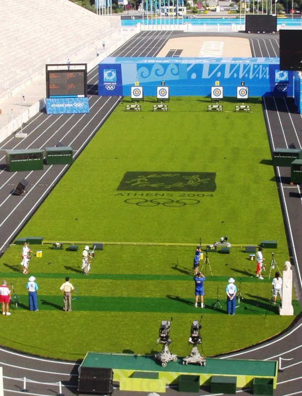

{% include oa_logo.html %}
{% include standard_title.html %}
## Congratulations
### on completing your first day's shooting
We hope you enjoyed yourself!
_Scroll through this presentation with the arrow keys or swipe!_
## Let's go over some of the things you learned today
- Safety
- The archery field
- Stance
- Loading an arrow
- Making a shot!
## Safety
_Archery is one of the safest sports you can take part in, due mainly to a culture of good safety habits_
- Arrows: pointy at both ends!
- Only load arrows on the shooting line
- Listen for "Hold!" and "Fast!", call them if YOU see a hazard

The archery field
Can you spot:
The Waiting Line?
The Shooting Line?
The Targets?
## Stance
- One foot either side of the shooting line
- Hips and shoulders square to the target
## Loading an arrow

Making a shot!
- Fingers: one above nock, two below
- Raise to eye level
- Draw smoothly to chin
- Release!
## Get some rest!
You'll have worked some new muscles today, so take a shower, drink plenty of water, and get a good night's sleep
We'll see you soon for your next session!
### Credits
- ["Aida Roman"](https://www.flickr.com/photos/cobaltfish/7745050270/) by [Andy Rogers](https://www.flickr.com/photos/cobaltfish/) is licenced under [CC BY 2.0](https://creativecommons.org/licenses/by-sa/2.0/)
- ["Athens archery"](https://commons.wikimedia.org/wiki/File:Athens_archery.jpg) by [Matthewmayer](//en.wikipedia.org/wiki/User:Matthewmayer) licensed under [CC BY SA 3.0](http://creativecommons.org/licenses/by-sa/3.0/) via [Commons](https://commons.wikimedia.org/wiki)